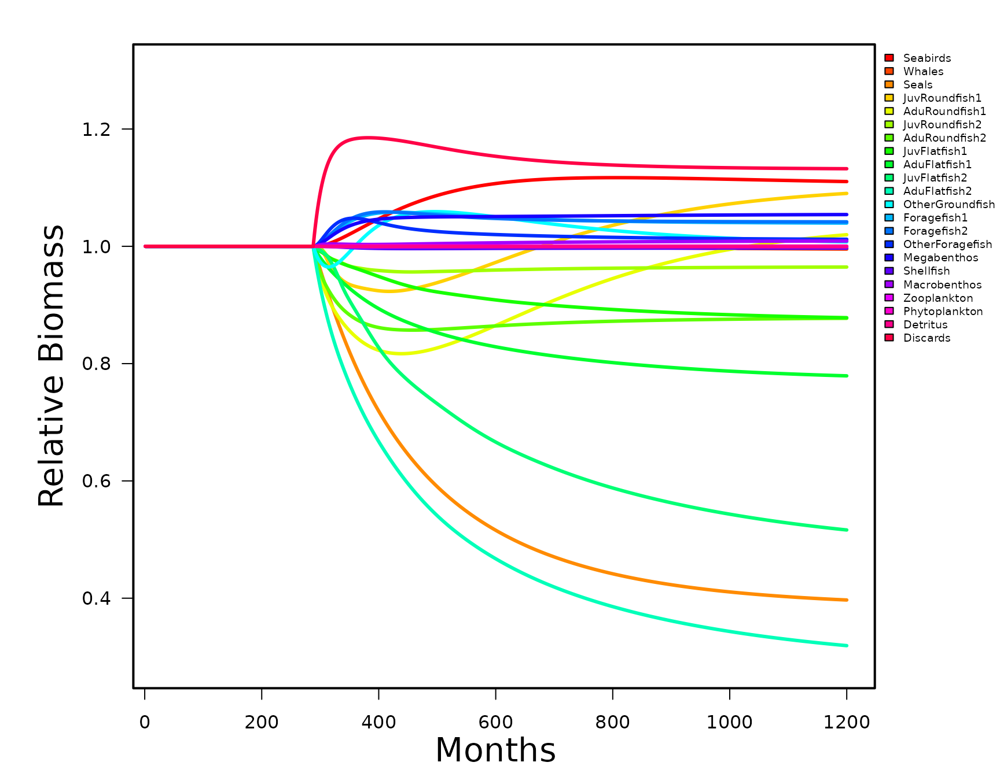

Rsim is the ecosim implementation of the EwE code in R. In order to
proceed you must have a valid Rpath object. The steps for setting this
up are described in vignette("ModelSetup").
REco <- rpath(REco.params, eco.name = 'R Ecosystem')Running rsim, is a three part process. First, the function
rsim.scenario() is run to convert rpath parameters to
rates. Within rsim.scenario() are 5 functions that
initialize the basic and stanza parameters, creates perturbation
matrices for fishing and other forcing functions, and a list of initial
states. Arguments passed to the rsim.scenario() function
are the Rpath object, the rpath parameter object, and a vector of years
corresponding to the length of the simulation.
REco.sim <- rsim.scenario(REco, REco.params, years = 1:100)The second part of rsim is to add forcing functions or change the
fishing behavior. This is accomplished by changing the appropriate list
within the REco.sim object created in the first step. There
are a series of adjust functions that will do this without having to
know the specific group numbers. For example, we can double the effort
of the trawler fleet after 25 years using the
adjust.fishing() function.
REco.sim <- adjust.fishing(REco.sim, 'ForcedEffort', group = 'Trawlers', sim.year = 25:100,
value = 2)The final part is to pass the modified REco.sim object to the
rsim.run() function. The only arguments to the
rsim.run() function are the Rco.sim object, the method for
numerical integration, and the length of the simulation. Rpath allows
for both Adams-Bashforth and Runge-Kutta 4 numerical integration. Older
versions of EwE use the Adams-Bashforth method while the latest version
(6+) uses Runge-Kutta (The default method for Rpath).
REco.run1 <- rsim.run(REco.sim, method = 'RK4', years = 1:100)The output from rsim.run() is another S3 class object.
Similar to the Rpath object created by rpath(), the generic
function print will give output similar to the ‘Ecosim
results’ tab in EwE. If you want to save the print results
you need to use the function write.Rsim(). The function
summary just like for the Rpath object will display what
other list items are available.
For example:
print(REco.run1)
#> Rpath sim results: R Ecosystem
#> Group StartBio EndBio BioES StartCatch
#> Outside Outside 1.000000e+00 1.000000e+00 1.0000000 0.00000000
#> Seabirds Seabirds 1.490000e-02 1.654560e-02 1.1104432 0.00001000
#> Whales Whales 4.540000e-01 4.518429e-01 0.9952486 0.00000010
#> Seals Seals 2.500000e-02 9.923369e-03 0.3969347 0.00200000
#> JuvRoundfish1 JuvRoundfish1 1.304305e-01 1.421985e-01 1.0902247 0.00300000
#> AduRoundfish1 AduRoundfish1 1.390000e+00 1.417537e+00 1.0198106 0.14500020
#> JuvRoundfish2 JuvRoundfish2 1.232608e+00 1.189076e+00 0.9646828 0.00300000
#> AduRoundfish2 AduRoundfish2 5.553000e+00 4.871675e+00 0.8773050 0.38900025
#> JuvFlatfish1 JuvFlatfish1 6.988442e-02 6.138067e-02 0.8783169 0.00200000
#> AduFlatfish1 AduFlatfish1 5.766000e+00 4.492539e+00 0.7791431 0.18000021
#> JuvFlatfish2 JuvFlatfish2 9.628877e-02 4.971856e-02 0.5163485 0.00200000
#> AduFlatfish2 AduFlatfish2 7.390000e-01 2.358241e-01 0.3191124 0.07000003
#> OtherGroundfish OtherGroundfish 7.400000e+00 7.456467e+00 1.0076307 0.38000000
#> Foragefish1 Foragefish1 5.100000e+00 5.302295e+00 1.0396656 0.35100000
#> Foragefish2 Foragefish2 4.700000e+00 4.896228e+00 1.0417506 0.09100000
#> OtherForagefish OtherForagefish 5.100000e+00 5.161275e+00 1.0120147 0.03100000
#> Megabenthos Megabenthos 1.976538e+01 2.083581e+01 1.0541568 0.19000000
#> Shellfish Shellfish 7.000000e+00 6.977903e+00 0.9968433 0.51000000
#> Macrobenthos Macrobenthos 1.740000e+01 1.755763e+01 1.0090591 0.00010000
#> Zooplankton Zooplankton 2.300000e+01 2.299229e+01 0.9996646 0.00000000
#> Phytoplankton Phytoplankton 1.000000e+01 1.000319e+01 1.0003190 0.00000000
#> Detritus Detritus 3.636667e+03 3.634375e+03 0.9993697 0.00000000
#> Discards Discards 1.218220e+00 1.379414e+00 1.1323194 0.00000000
#> Trawlers Trawlers 0.000000e+00 0.000000e+00 NaN 0.00000000
#> Midwater Midwater 0.000000e+00 0.000000e+00 NaN 0.00000000
#> Dredgers Dredgers 0.000000e+00 0.000000e+00 NaN 0.00000000
#> EndCatch CatchES
#> Outside 0.000000e+00 NaN
#> Seabirds 2.220938e-05 2.2209377
#> Whales 1.990513e-07 1.9905133
#> Seals 1.191009e-03 0.5955044
#> JuvRoundfish1 4.367063e-03 1.4556875
#> AduRoundfish1 2.342194e-01 1.6153037
#> JuvRoundfish2 3.865061e-03 1.2883537
#> AduRoundfish2 6.296491e-01 1.6186342
#> JuvFlatfish1 2.644912e-03 1.3224560
#> AduFlatfish1 2.416845e-01 1.3426903
#> JuvFlatfish2 1.566120e-03 0.7830602
#> AduFlatfish2 4.151967e-02 0.5931378
#> OtherGroundfish 6.650567e-01 1.7501492
#> Foragefish1 3.659638e-01 1.0426318
#> Foragefish2 9.584120e-02 1.0532000
#> OtherForagefish 3.238464e-02 1.0446658
#> Megabenthos 2.002890e-01 1.0541529
#> Shellfish 5.083903e-01 0.9968438
#> Macrobenthos 1.009056e-04 1.0090563
#> Zooplankton 0.000000e+00 NaN
#> Phytoplankton 0.000000e+00 NaN
#> Detritus 0.000000e+00 NaN
#> Discards 0.000000e+00 NaN
#> Trawlers 0.000000e+00 NaN
#> Midwater 0.000000e+00 NaN
#> Dredgers 0.000000e+00 NaNTo export this object to a csv file
write.Rsim(REco.run1,file = here::here("run1Output.csv"))
summary(REco.run1)
#> Rsim parameters for: R Ecosystem
#>
#> Summary Statistics:
#> NumGroups NumLiving NumDetritus NumFleets TotBiomassStart TotBiomassEnd
#> 1 25 20 2 3 3753.822 3750.876
#> TotCatchStart TotCatchEnd
#> 1 2.34911 3.028756
#>
#> Rpath sim also includes:
#> [1] "out_Biomass" "out_Catch" "out_Gear_Catch" "annual_Catch"
#> [5] "annual_Biomass" "annual_QB" "annual_Qlink" "end_state"
#> [9] "crash_year" "pred" "prey" "Gear_Catch_sp"
#> [13] "Gear_Catch_gear" "Gear_Catch_disp" "start_state" "params"In addition, there is a quick graphical routine for plotting biomass trajectories over time. Other plots similar to the group plots are possible but at this time there isn’t a built-in function.
rsim.plot(REco.run1, spname="all")